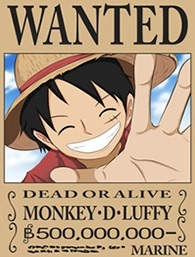
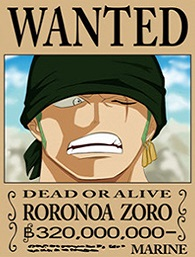
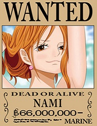
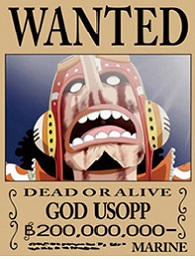
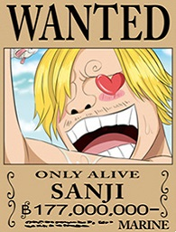
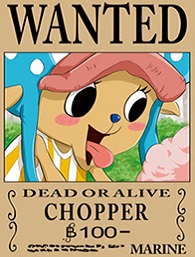
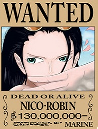
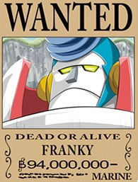
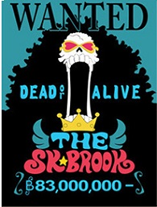

-

Monkey D. Luffy, Líder dos Mugiwara
Capitão, usuário da Akuma no Mi Paramecia Gomu Gomu (Borracha) possui a recompensa no valor de $$500.000.000 Berries.
-

Roronoa Zoro, Caçador de Piratas
Vice Capitão espadachim, possui recompensa no valor de $$320.000.000 Berries, é especialista no estilo espadachim de 3 espadas (Santoryu):
- Meito, Wado Ichimonji (pertencia a Kuina);
- Sandai Kitetsu (pertencia a Ippon-Matsu); e
- Meito, Shusui (pertencia a Ryuma).
-

Nami, a gata ladra
Navegadora Profissional, possui recompensa no valor de $$66.000.000 Berries.
-

God Usoop, o Deus
Atirador e mentiroso compulsivo, possui recompensa no valor de $$200.000.000 graças aos acontecimentos em derrotar a Sugar (Oficial do Donquixote Doflamingo).
-

Vinsmoke Sanji, Perna Negra
Cozinheiro pervertido, possui recompensa no valor de $$177.000.000 Berries.
-

Tony Tony Chopper, Amante de Algodão Doce
Médico Rena, usuário da Akuma no Mi Hito Hito, possui recompensa no valor de $$100 Berries.
-

Nico Robin,
Arqueóloga, usuária da Akuma no Mi Hana Hana, possui recompensa no valor de $$130.000.000 Berries.
-

Franky, Cyborg
Carpinteiro, possui recompensa no valor de $$94.000.000 Berries.
Metade humano metade Robô, Franky tem a parte frontal de seu corpo toda reconstruída usando partes robóticas devido ao acidente que sofreu quando foi atropelado por um trem.
-

Brook, Soul King
Músico, usuário da Akuma no Mi Yomi Yomi, possui uma recompensa no valor de $$83.000.000 Berries.
Seu corpo é somente esqueleto devido a seu atraso em retornar para o corpo graças a habilidade da Yomi Yomi no Mi. Cabelo Black Power bem exuberante é a única parte que ainda é "viva".